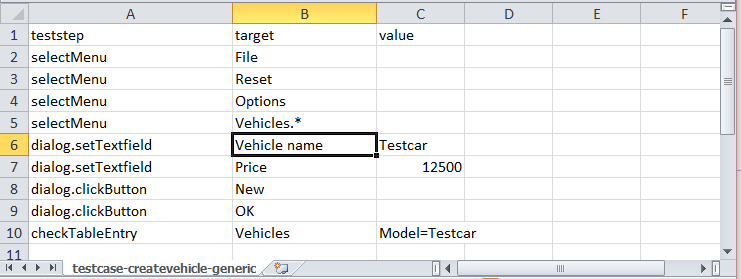
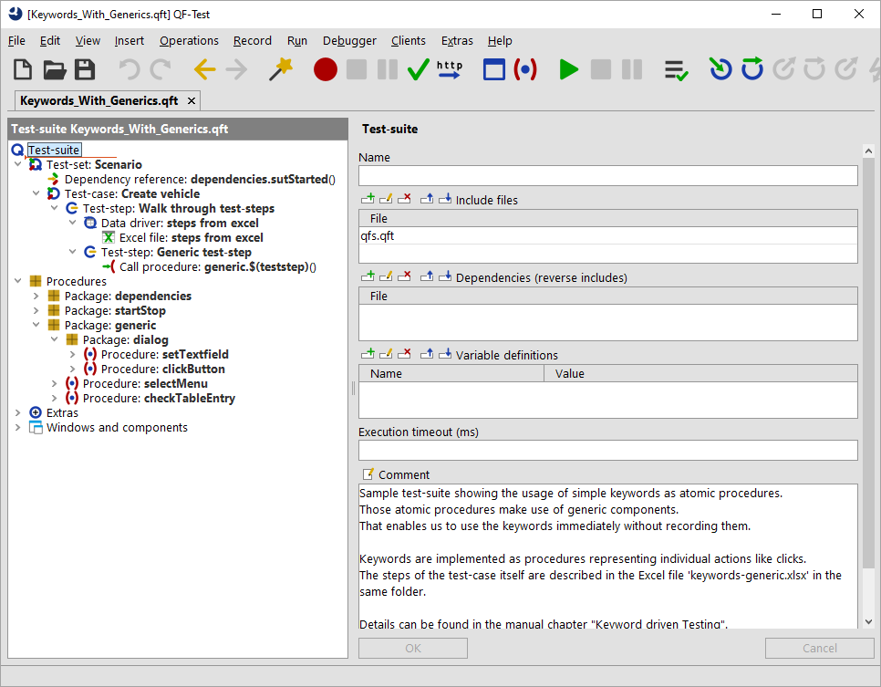

| Version 6.0.3 |
The previous section shows how we can apply keyword-driven testing to call various procedures depending on the test-plan. But the graphical components and their recognition still stays in QF-Test and the respective procedures. This approach requires that every procedure needs to be recorded or created before actually running the tests.
However, it's also possible to specify the actual component information directly in the test-plan. This plan should then be interpreted by QF-Test.
You can find a sample test-suite at
qftest-6.0.3/demo/keywords/generic/Keywords_With_Generics.qft.
The respective test-plan can be found at qftest-6.0.3/demo/keywords/generic/keywords-generic.xlsx.
Please take care to copy the demo folder to a project-related folder first and modify them there.
This approach depends on the concept of generic component recognition in QF-Test. Generic component recognition allows the user to apply variables to the recorded component information or to move components out of hierarchical component structure. Please see section 5.8 for details.
Let's go back to our sample test-case. The test-case "Create vehicle" looks like this.
As you can see the test-case follows the same description like in the previous section about atomic keywords.
The Excel file looks like this:
|
|  | ||
|
| Figure 28.4: Excel file of generic components | ||
The used Excel file contains values like selectMenu or dialog.clickButton for the teststep column.
Additionally a new column target was introduced. That new variable will be explained later.
Like in the previous samples you can find a demo implementation at qftest-6.0.3/demo/keywords/generic/Keywords_With_Generics.qft.
You can find the respective procedures in the package generic.
Please take care to copy the demo folder to a project-related folder first and modify them there.
|
|  | ||
|
| Figure 28.5: Test-suite for generic components | ||
Let's investigate the procedure selectMenu first. This procedure consists of a mouse-click at the component GenericMenuItem.
If we analyze that component in the test-suite, we see that the attribute class is set to MenuItem. We also see that the attributes
Name and Feature are empty, but there is one entry for the Extra features table. This entry has the name qfs:label with the state
Must match and the value $(target). The next attributes
Structure is empty again and the values for Geometry are set to '-'. You can details about the '-' at section 5.8.
This way of defining a component means that the recognition of that component relies on the variable target.
The variable itself is used in the extra feature qfs:label.
That extra feature qfs:label represents the best describing text of a component, e.g. the text on a button or a label close to a text-field.
The excel file got the column target which contains the exact label of the respective target components.
This method has been applied to all other components as well.
Another noteworthy aspect is the package dialog under the package generic.
This has been introduced because QF-Test also takes the window or dialog objects into account in order to recognize the graphical components correctly.
QF-Test also distinguishes between windows and dialogs. Standard windows which allow the user to work within a second window of the application as well and
so-called modal windows preventing the user to work in a second window of your application.
In most cases it's simpler to separate those two kinds of windows in several packages. If you want, it might be possible to unify them in one window, but that's
not shown in the current samples. By the way, you don't need to separate between those window types if you test web applications as there every component
is part of a web-page.
In this section we have seen how to make the component recognition more flexible using variables. Additionally we have created one procedure per action and type of target component. This concept allows us to define all test-cases within Excel. The required procedures including the generic components have to be created at the beginning of the project. Of course you can also mix this approach with some recorded procedures. Those recorded procedures can then be used like business-related procedures described in subsection 28.2.1)
| Last update: 9/6/2022 Copyright © 1999-2022 Quality First Software GmbH |